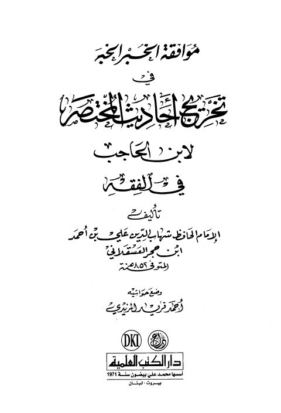

Downloads need an internet connection.
موافقة الخبر الخبر في تخريج أحاديث المختصر- ط. العلمية
Authors: أحمد بن علي بن حجر العسقلاني
Editors: أحمد فريد المزيدي
Publishers: دار الكتب العلمية
**▫️ العنوان: موافقة الخبر الخبر في تخريج أحاديث المختصر- ط. العلمية** ▪️ المؤلف: #أحمد_بن_علي_بن_حجر_العسقلاني ▫️ المحقق: #أحمد_فريد_المزيدي ▪️ الناشر: #دار_الكتب_العلمية ▫️ تاريخ النشر: 1428هـ 2007م ▪️ بلد النشر: بيروت، #لبنان ▫️ الطبعة: 1 ▪️ عدد الأجزاء: 1 ▫️ الصفحات: 592 ▪️ نوع الوعاء: #كتاب ▫️ التصنيف الرئيسي: #الحديث_وعلومه ▪️ التصنيف الفرعي: #باقي_مجموعات_الحديث ۪